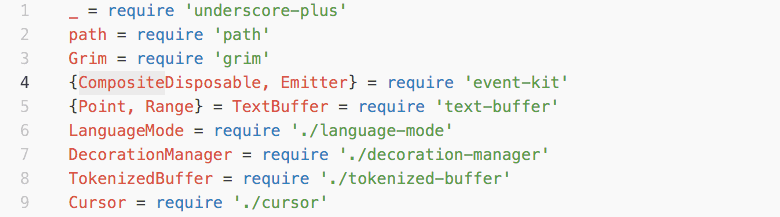
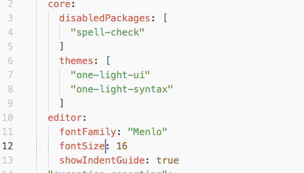
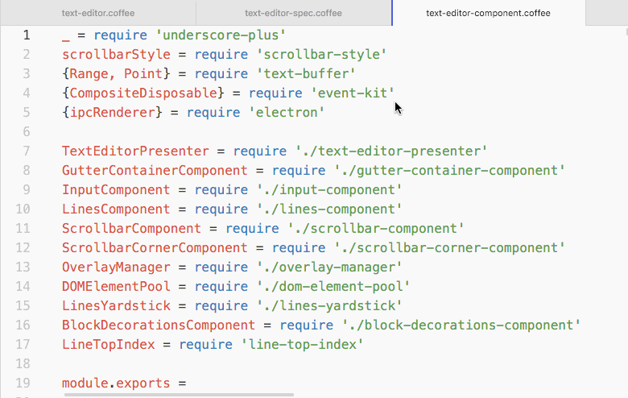

Atom 1.8 and 1.9 beta
We are happy to announce that Atom 1.8 and 1.9-beta are out!
Atom 1.8.0
Below is a summary of some noteworthy changes that shipped with Atom 1.8.0. Thank you very much to all of our beta users who have tested and provided useful feedback during the beta period! 
Better Environment Handling
When launching Atom from your terminal, the existing windows’ environments will now be updated with the most recent environment variables. Props to @joefitzgerald for implementing this! 
Move Selected Text Left and Right
This version ships with two new commands for moving text left and right by one column. By default, they are bound to cmd-ctrl-left and cmd-ctrl-right on OS X and alt-shift-left and alt-shift-right on Windows and Linux. Shoutout to @mnquintana for this new feature! 

Introduce core.restorePreviousWindowsOnStart
The default behavior of the atom command is to bring back all the windows that were opened when Atom was last closed. We understand, however, that everyone has different development preferences and, as such, we have introduced the core.restorePreviousWindowsOnStart setting. This option will be on by default, but you can easily turn it off by changing your config.cson file (please note that this setting won’t appear in the Settings UI).
Props to our awesome community, and in particular to @jordanbtucker, for the great work on this! 
Other Improvements and Bugfixes
We have worked on shipping several bug fixes for this release, including bad emoji rendering on OS X, accidental UI zooming, inaccurate block decoration measurements and a number of Git related issues. Together, they should deliver an even smoother and robust editing experience.
To see every PR that went into this release, please check out its changelog.
Atom 1.9.0-beta0
This beta version of Atom introduces several important changes that will bring performance and reliability improvements to the editor, as well as some new features we are really excited about. We recommend you check it out! 
Internals Redesign - Display Layers
We have been working on a complete restructure of the editor display layer. We plan to share all the details of this redesign in the future in a more in-depth blog post, but in the meantime here are some of the things that have been improved as part of this rewrite:
- Faster editing and scrolling when soft-wrap is enabled or some text regions are folded.
- Introduction of free-form folds, in addition to row-based folds, via
Fold Selection(alt-cmd-ctrl-fon OS X andalt-ctrl-fon Windows and Linux). - Improved strategy when soft-wraps occur at whitespace locations.

- atom/text-buffer#149 - Add Display Layers to transform text for display on screen
- atom/atom#11324 - Use display layers facility of text-buffer; delete all the code they replace
Electron Upgrade (v0.37.8)
This upgrade features many rendering and performance improvements and, in particular, we are very excited about optimizeLegibility being turned on by default, which is going to enable efficient ligatures rendering on all the platforms. Shoutout to @50Wliu for the great work on this! 
Drag and Drop Layout Management
Thanks to @MikeInnes, we are very proud to announce drag and drop layout management for tabs. We think this is a great feature that will make organizing your workspace even easier! 

Cygwin and Msys Compatibility On Windows
As part of our ongoing effort on improving Atom on Windows, we have released a fix that will make the atom command compatible with both Cygwin and Msys, providing a more consistent experience across all the platforms.
- atom/atom#11762 - Ensure atom command works on Cygwin + MSYS bash shells
- atom/atom#11833 - Ensure Cygwin + Msys compatibility on Windows
Enhanced Reliability When Saving Files
With this release, we are shipping a File Recovery Service running on the main process, which takes advantage of the Electron process model to recover truncated file data in the case of a hard crash in the renderer process. By default, this service tries to recover files automatically: if during that process there is a power outage, or something else causes your computer to shutdown, a backup will be saved under ~/.atom/recovery.
We can’t wait to hear your feedback about these changes! For a more comprehensive list of improvements and bug fixes, please check out the release notes.